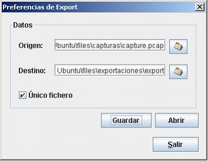
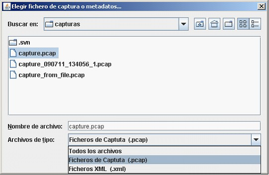
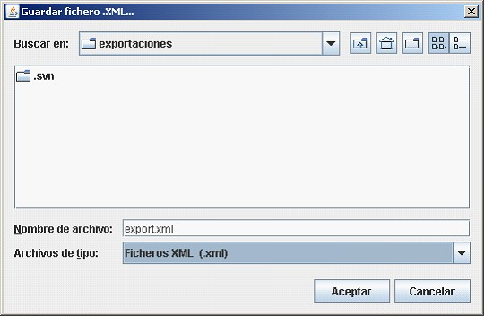

Preferencias de la exportacion
Con esta función de parametrización se puede seleccionar tanto el nombre del fichero origen como el de destino para posteriormente guardar la decisión.

- Como fichero origen, son selecionables tanto un fichero en formato pCap como un XML de Metadatos (fichero que contiene las definiciones de varios fichero de captura concatenados)

- Como fichero destino sera uno con extensión XML.

- Marcando la opción de un único fichero, la exportación almacenará un único fichero aunque la información de origen sea proveniente de varios ficheros.

Copyright © 2010, <Carlos Mardones Muga>
Created with the Freeware Edition of HelpNDoc: Easily create Help documents